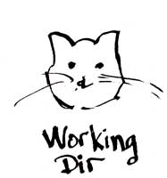

Welcome!
Girl Develop It is here to provide affordable and accessible programs to women to learn software through mentorship and hands-on instruction.
Some Rules:
- We are here for you!
- Every question is important
- Help each other
- Have fun
Goals for Today's Course
- Learn what version control is
- Get you set up to use Git
- Understand the basics of Git
- "Git" social with Github
Introductions
- Who are you?
- What do you do, or what do you want to do?
- What's your experience with GDI?
- What's your experience with Git and GitHub?
What is Version Control?
Version control allows you and your team to do two very powerful things:
- Collaborate
- Track and Revert Changes
Collaborate
You can create anything* with other people and be able to easily merge changes with each other
- software
- documentation
- academic papers
- books, articles, blogs
- websites
* Okay, almost anything. Git works well for projects that are primarily:
- text based
- contained in a single directory
- don't contain a lot of large media files
- movies
- audio
- very large images
Track and Revert Changes
Git gives you the ability to "go back in time"
- see who made changes, when
- track down bugs
- see the history of the project
Not Convinced Yet?
- Employers want this
- It's a required skill
- It's a standard expectation to work in groups
- public, i.e. opensource
- private
- It's personally useful
Types of Version Control
There are basically two types:
- Centralized:
- e.g. CVS, Subversion, Perforce
- Decentralized:
- e.g. Git, Mercurial (Hg)
Centralized Version Control
- One central source
- Collaborators check files out
- Work is done locally
- Others are prevented from working on checked out files
- Collaborators check files back in when done
Decentralized Version Control
- Local source, shared remote
- Collaborators clone remote (fork, mirror)
- Work is done locally
- Others can work on same files
- Changes are pushed to remote
- Tools for merging conflicts
Features of Git
- Fast and easy setup: You can get a whole team and / or project up and running quickly
- Distributed: everyone has their own full repository of the project, changes are shared through a central Depot (remote, origin) repository
- Hashed commits: commits have unique ID
stringto keep track of when changes are made and by whom
Working with Git
Meet the Git Cats:
Git Cats

Naming the Cats

The Stage
Dance Step 1: Adding
Dance Step 2: Committing

Dance Step 3: Pushing

Creating repositories
Creating a local repository starts with having a local working directory.
- it can be empty
- it can already have files
Initialize the index

The Stage
Stage changes
Committing changes
Creating the remote
Before you can push changes, you need to create the remote repository

You usually create the remote on the GitHub website (or whereever you store your remote repositories.)
The remote name
By convention, and this almost never changes, the remote repository is known to the local repository as "origin".
It doesn't have to be, but it's the default most tools and other users assume.
Pushing changes

Branching and Merging
… allows us to work on different parts of the project at the same time without interfering with other work.
… is also useful for trying experiments without breaking existing code
master is the default branch

make a branch for a new feature

try an experiment on the feature
oops, need to hot-fix master

have to merge back to feature

the repository merge index

Getting Git Software
Most systems come with some version of Git installed, but it's usually best to work with the most recent (or close to recent) version.
Git itself is primarily a command line tool
There are also two good GUI tools that you can do most of what you'll learn today.
- SourceTree
- Github Desktop
We'll be working with SourceTree today
Install Git

Install SourceTree
GitHub Desktop - a GUI Git client
Another alternative to most of the command line git tools
Download from:
(We won't be covering this tool in class.)
Working with SourceTree
Click on the following link for the next set of slides: